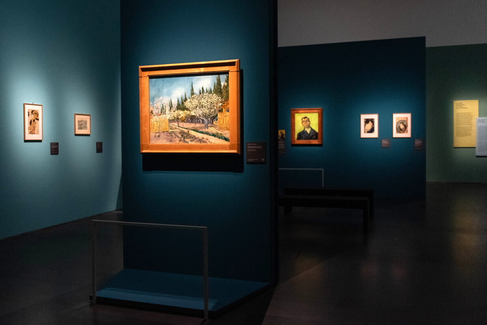

<p style="text-align: center;">In questo museo, durante il mese di giugno, potrete assistere a delle mostre dedicate ai seguenti artisti: Botticelli, Munch, Picasso, Van Gogh, Monet, Da Vinci e Vermeer. <br>
    La mostra inizierà il primo giungno e si concluderà il primo maggio, ad ogni astista saranno dedicati dai 3 ai 5 giorni.</p>
